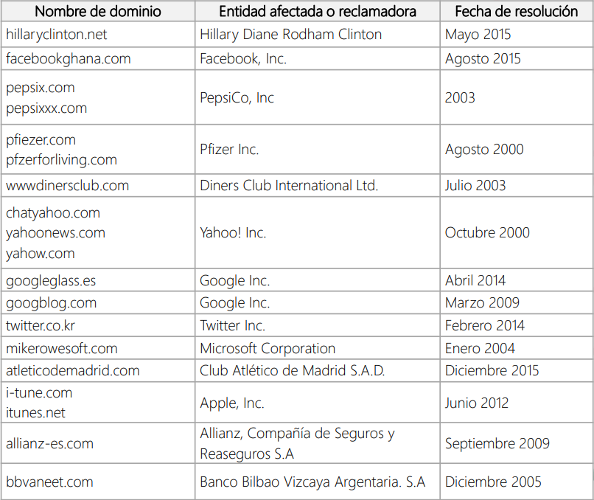
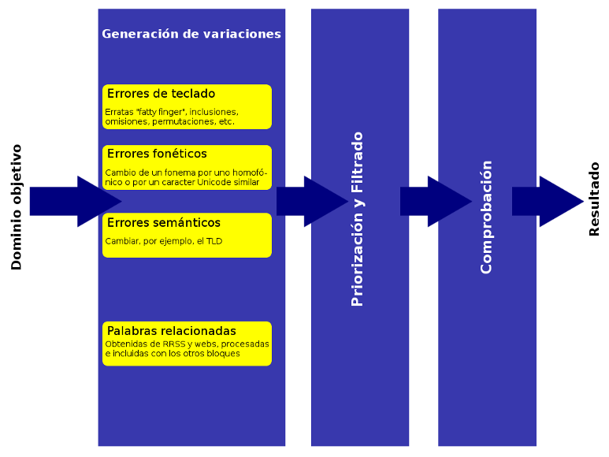

Detección de dominios typosquatting
Javier Artiga Garijo
Objetivo
Diseño y desarrollo de un sistema de monitorización de dominios typosquatting,
basado en recoger información con peticiones DNS, Whois y HTTP
y almacenarla en un servidor de búsqueda Elasticsearch,
con el objetivo de analizar la viabilidad técnica de esta solución para ElevenPaths
Contexto
Casos de cybersquatting (2000-2015)
Fuente: CyberCamp 2016: CyberSquatting dot es
Antecedentes
Arquitectura de la solución propuesta en Typosquatting Report
Fase 1
"Verificar la existencia de los dominios de los clientes con diferentes TLDs"
Desarrollo: Fase 1

Análisis

Profiling: Análisis de Rendimiento a partir de los logs de retrieveData.py
→ El 2% de las peticiones Whois cuestan
más tiempo que el 98% restante.
Desarrollo y Pruebas


Solución 1: generar 2 diccionarios, separando los dominios por el tiempo que tardan en resolver su petición Whois (criterio: >10s = lento).
Desarrollo y Pruebas


Solución 2: hacer peticiones con un Pool de X procesos simultáneos (se eligió X=30).
Fase 2
"Incluir las variaciones del nombre de cada dominio"
Desarrollo: Fase 2

Pruebas


Tras analizar la herramienta dnstwist, se lanzó una prueba con todas las variaciones de las 81k combinaciones actuales (offDoms+TLDs) mediante 300 hilos, para comprobar cuánto costaba procesar tal magnitud de dominios.
Análisis

Profiling: Análisis de Rendimiento a partir del output de typoHits.sh
→ Se generan 36M de variaciones, de las cuales están registradas un 0,707% (562k).
De estos dominios registrados, el 98% tienen IP asociada y el 45%, servidor MX.
Próximos objetivos: hallar y optimizar el tiempo que cuesta
- generar el diccionario completo con variaciones (
genTypoDict.py) - recoger toda la información de DNS (
retrieveData.py)
Obstáculos: problemas de memoria por el tamaño de los ficheros (MemErrors).
Soluciones:
1) --piping
2) Dividir diccionarios
3) --elastic
Fase Extra
"Monitorización de marcas en Redes Sociales"
Fase Extra
Conclusiones
- Escalabilidad: Soporta 50 clientes con unos 55 dominios cada uno.
- Rendimiento: Mejorado de 1,1 s/dom. (con 55k dominios)
a 0,3 s/dom. en Fase1 (81k) y <0,24 s/dom. en Fase2 (36M). - Técnicas más frecuentes:
- Inserción (23%)
- Bitsquatting (16%)
- Sustitución y Homóglifos (14%)
→ Completamente viable. Incluso pueden mejorarse algunos aspectos:
Líneas futuras
- DNS Round Robin
- Fechas en Elasticsearch
- Más paralelización